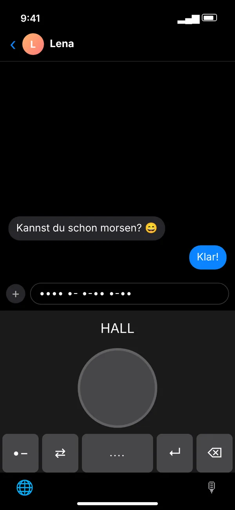

- Lade MorseLux aus dem App Store. Laden imApp Store
- Öffne Einstellungen → Allgemein → Tastatur → Tastaturen.
- Tippe auf Tastatur hinzufügen … und wähle MorseLux.
- Optional: Tippe auf MorseLux und aktiviere Vollzugriff erlauben, damit die Tastatur deine App-Einstellungen, die Morsetaste (Pro) und die Tipp-Vibration nutzen kann.
- In jeder App wechselst du mit der Globus-Taste 🌐 zur Morse-Tastatur.
MorseLux › Tastatur
·–·· ··– –··– Kostenlos · iPhone-Tastatur · in jeder App
Morse-Tastatur fürs iPhone
Morse am Handy tippen, in jeder App – WhatsApp, iMessage, Instagram, Notizen. Die Morse-Tastatur von MorseLux kann dreierlei: Punkt- und Strich-Tasten und normale Buchstaben, die zu Morse werden (beides gratis), sowie eine Morsetaste wie beim Telegrafen (Pro).
Laden imApp Store
- ✓ Zwei Modi kostenlos
- ✓ In 1 Minute eingerichtet
- ✓ Funktioniert ohne Internet
- ✓ Speichert nichts, was du tippst



So sieht die Morse-Tastatur in der App aus – hier im Chat (Darstellung).
Drei Arten, mit der Morse-Tastatur zu schreiben
·–
Punkt- & Strich-Tasten Gratis
Du tippst jeden Buchstaben in Morse. Die Tastatur zeigt dir dabei, welcher Buchstabe entsteht.
Du tippst ···· → H
Aa
Buchstaben zu Morse Gratis
Du schreibst ganz normal – in der Nachricht landet Morsecode. Perfekt für geheime Nachrichten.
Du tippst Hallo → ···· ·– ·–·· ·–·· –––
👆
Morsetaste Pro
Eine große Taste wie beim Telegrafen: kurz tippen für Punkt, halten für Strich – mit Ton.
Kurz, kurz, kurz → S
In 1 Minute eingerichtet
Funktioniert in allen Apps, in denen du schreibst
WhatsAppiMessageInstagramTelegramSnapchatTikTokSignalNotizenMailSafari
Die Morse-Tastatur ist eine Systemtastatur. Du wechselst mit der Globus-Taste 🌐 hin und zurück – deine normale Tastatur bleibt, wie sie ist.
3 Wege, am iPhone zu morsen
| MorseLux-Tastatur | Gboard (Google) | Andere Morse-Tastatur-Apps | |
|---|---|---|---|
| Preis | Kostenlos (Morsetaste mit Pro) | Kostenlos | Unterschiedlich |
| Punkt- & Strich-Tasten | ✓ | ✓ | ✓ |
| Normal tippen, Morse senden | ✓ | – | Teilweise |
| Sprache | App und Tastatur auf Deutsch, Englisch und Spanisch | Morse-Layout für Englisch (USA), laut Google-Hilfe | Unterschiedlich |
| Morsen lernen | ✓ Lektionen, Trainer, Übersetzer in derselben App | Eigenes Web-Spiel | Selten |
Ganz ohne App? Schreib deine Nachricht im Morse-Übersetzer und kopiere den Morsecode in jeden Chat.
Ideen für die Morse-Tastatur
🧠
Nebenbei lernen
Jede Nachricht in Morse ist Training. So sitzen die Zeichen schneller als mit jeder Tabelle.
🧩
Rätsel & Geocaching
Hinweise für Schnitzeljagd, Escape Room oder Geocache direkt in Morse verschicken.
💬
Spaß im Gruppenchat
Ein „Gute Nacht“ in Morse, ein Insider-Gruß oder ein Morse-Status in der Bio.
Was ist gratis, was ist Pro?
Gratis: Punkt- und Strich-Tasten und der Modus „Buchstaben zu Morse“ – ohne Zeitlimit. MorseLux Pro schaltet die Morsetaste und alle Lektionen der App frei (Abo monatlich oder jährlich – jährlich mit 1 Woche gratis testen – oder einmal kaufen; Preis im App Store).
Gratis: Punkt- und Strich-Tasten und der Modus „Buchstaben zu Morse“ – ohne Zeitlimit. MorseLux Pro schaltet die Morsetaste und alle Lektionen der App frei (Abo monatlich oder jährlich – jährlich mit 1 Woche gratis testen – oder einmal kaufen; Preis im App Store).
🔒 Deine Nachrichten bleiben bei dir
Die Tastatur speichert und sendet nicht, was du tippst, liest nicht die Zwischenablage und funktioniert ohne Internetverbindung. Vollzugriff braucht sie nur für deine App-Einstellungen, die Pro-Freischaltung (Morsetaste) und die Tipp-Vibration. Details stehen in der Datenschutzerklärung.
Die Tastatur speichert und sendet nicht, was du tippst, liest nicht die Zwischenablage und funktioniert ohne Internetverbindung. Vollzugriff braucht sie nur für deine App-Einstellungen, die Pro-Freischaltung (Morsetaste) und die Tipp-Vibration. Details stehen in der Datenschutzerklärung.
Häufige Fragen
Wie kann ich am iPhone morsen?
Mit einer Morse-Tastatur: MorseLux installieren, dann Einstellungen → Allgemein → Tastatur → Tastaturen → Tastatur hinzufügen → MorseLux. In jeder App wechselst du mit der Globus-Taste. Ohne App kannst du Morse im Online-Übersetzer schreiben und kopieren.
Gibt es eine kostenlose Morse-Tastatur fürs iPhone?
Ja. Die MorseLux-Tastatur ist kostenlos: Punkt- und Strich-Tasten und der Modus „Buchstaben zu Morse“ kosten nichts, nur die Morsetaste gehört zu MorseLux Pro. Auch Googles Gboard hat ein kostenloses Morse-Layout, laut Google-Hilfe allerdings nur für Englisch (USA).
Wie bekomme ich eine Morse-Tastatur aufs iPhone?
Installiere MorseLux und öffne dann Einstellungen → Allgemein → Tastatur → Tastaturen → Tastatur hinzufügen und wähle MorseLux. In jeder App wechselst du mit der Globus-Taste zur Morse-Tastatur.
Funktioniert die Morse-Tastatur in WhatsApp?
Ja. Es ist eine Systemtastatur und funktioniert in WhatsApp, iMessage, Instagram, Telegram, Mail, Notizen und jeder anderen App mit Textfeld.
Warum fragt die Tastatur nach „Vollzugriff“?
Vollzugriff braucht die Tastatur nur, um deine Einstellungen aus der App, die Pro-Freischaltung (Morsetaste) und die Tipp-Vibration zu nutzen. Sie speichert nicht, was du tippst, liest nicht die Zwischenablage und sendet nichts ins Internet. Ohne Vollzugriff funktionieren die Punkt- und Strich-Tasten und „Buchstaben zu Morse“ mit den Standardeinstellungen.
Kann ich normal tippen und Morse verschicken?
Ja. Im Modus „Buchstaben zu Morse“ tippst du ganz normal und die Tastatur schreibt Punkte und Striche. So verschickst du am einfachsten geheime Nachrichten.
Ist die Morse-Tastatur kostenlos?
Die Punkt- und Strich-Tasten und der Modus „Buchstaben zu Morse“ sind kostenlos. Die Morsetaste, bei der du eine Taste kurz und lang tippst wie bei einer echten Morsetaste, gehört zu MorseLux Pro.
Gibt es eine Morse-Tastatur für Android?
MorseLux gibt es fürs iPhone. Unter Android hat Googles Gboard ein Morse-Layout. Auf jedem Handy kannst du außerdem den Online-Übersetzer nutzen und den Morsecode kopieren.
Muss ich Morsecode können, um die Tastatur zu nutzen?
Nein. Im Modus „Buchstaben zu Morse“ tippst du normal und die Tastatur schreibt den Morsecode. Wer es lernen will, findet in der App tägliche Lektionen und hier auf der Seite einen kostenlosen Morse-Trainer.